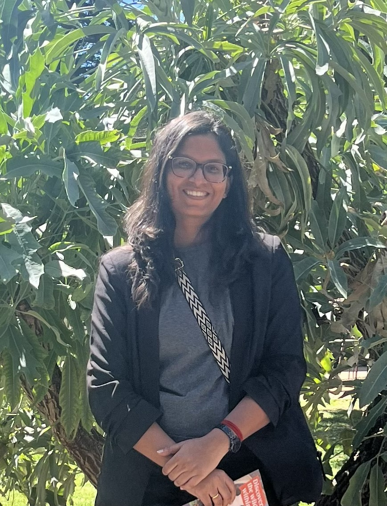

My research interests lie in the nexus of healthy diets, sustainable food transformation, and climate change.

I am a doctoral scholar at the Indian Institute of Management Ahmedabad (IIMA). My research interests lie in the nexus of healthy diets, sustainable food transformation, and climate change. Currently, I am committed to understanding how healthy diets can improve health and reduce environmental impact.
I have a background in Agriculture: B.Sc. (Agriculture) from Tamil Nadu Agricultural University, Madurai Campus. After this, I went on to pursue an MBA in Agribusiness Management from TNAU, Coimbatore. I also have corporate experience, working as a Senior Associate in the University Liaison & Early Career Engagement Team at LTIMindtree Ltd. (L&T Group).
Latest news.
Groningen Sustainability Conference, the Netherlands · 5–10 April 2027
More →With Sowmya Swaminathan and Vartika Singh
Read →Adelaide, Australia · February 2026
More →